Past Fentress County, TN Sheriffs
Michael Reagon
2017 - 2026
Charles "Chucky" Cravens
2014 - 2017 (Resigned)
Tony Choate
2010 - 2014
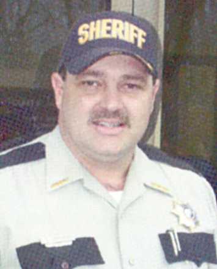
Charles "Chucky" Cravens
2006 - 2010
Ray Atkins
1998 - 2006

Unknown
1994
Mitch Stephens
1986 - 1994
Tommy Williams
1978 - 1984
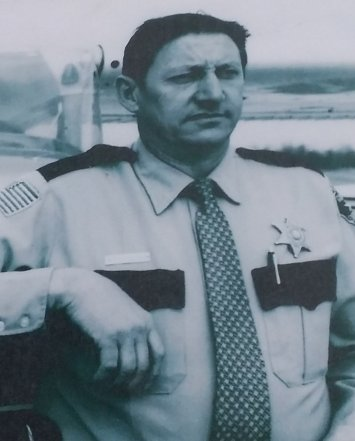
Isaac K "Buster" Stockton
1972 - 1978
Unknown
1968 - 1972
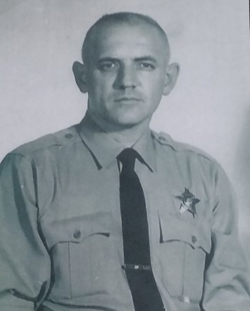
Irvin R Jones
1962 - 1968
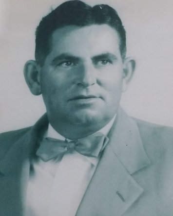
Clayton R "Pont" Upchurch
1960 - 1962
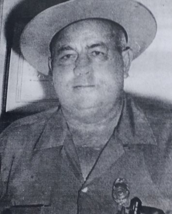
Irvin R Jones
1958 - 1960
Clayton R "Pont" Upchurch
1950 - 1958
Clay Stephens
1950 (Resigned)
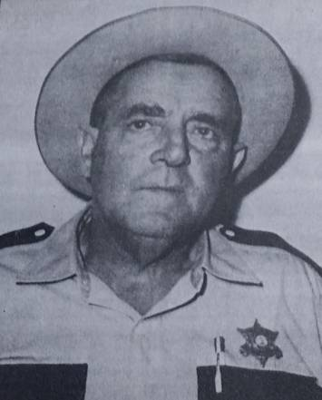
Arvel Earl Koger
1948 - 1950
Clyde Conatser
1946 - 1948
John S Hinds
1944 - 1946
Clyde Conatser
1942 - 1944

Wilford Smith
1940 - 1942

Oscar Taylor
1940 (Appointed)
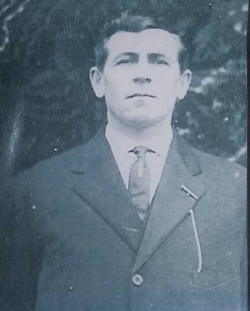
Horace B Taylor
1938 - 1940 (Killed in the line of duty)
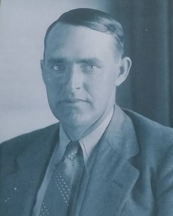
Wilford Smith
1936 - 1938
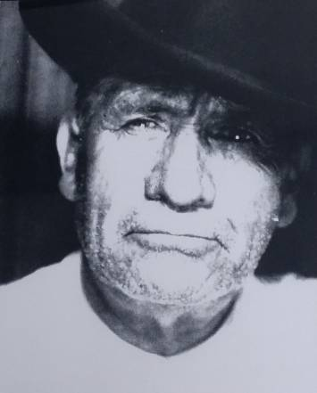
John M Peavyhouse
1932 - 1936
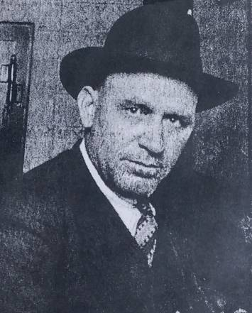
Charles Anthony Norman
1928 - 1932

James T Livingston
1926-1928
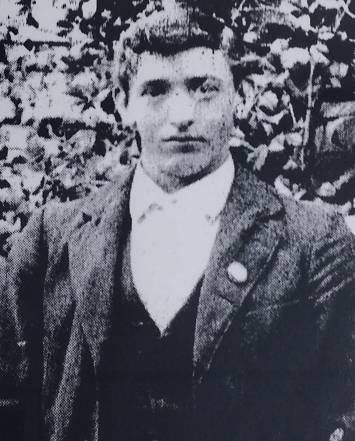
Harve Beaty
1924 - 1926

Gustus Benton "Bent" Hill
1918 - 1924

James T Livingston
1916 - 1918
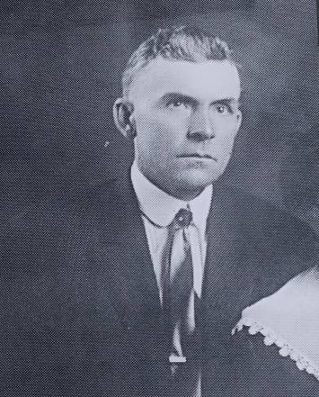
Warren Edwin "Dumps" Taylor
1912 - 1916

James T Livingston
1910 - 1912
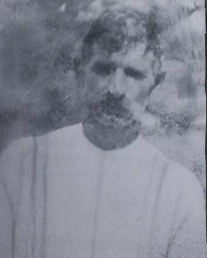
Solomon Wyatt "Sol" Winningham
1908 - 1910
Samuel William Smith
1904 - 1908
James T Livingston
1902 - 1904
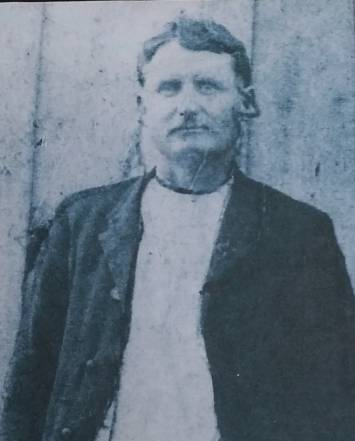
Gustus Benton "Bent" Hill
1900 - 1902

George W "Hickory" Conatser
1898 - 1900
James T Livingston
1892 - 1898
Unknown
1878 - 1892

George W "Hickory" Conatser
1873 - 1878